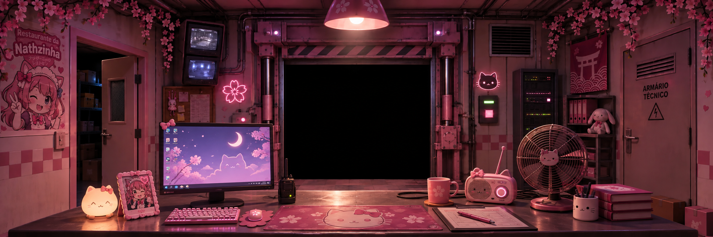
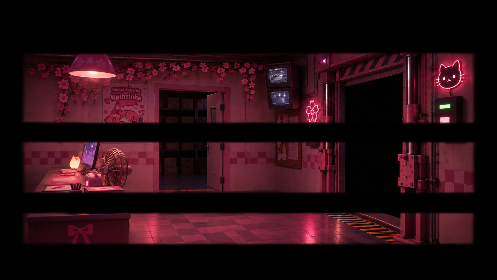
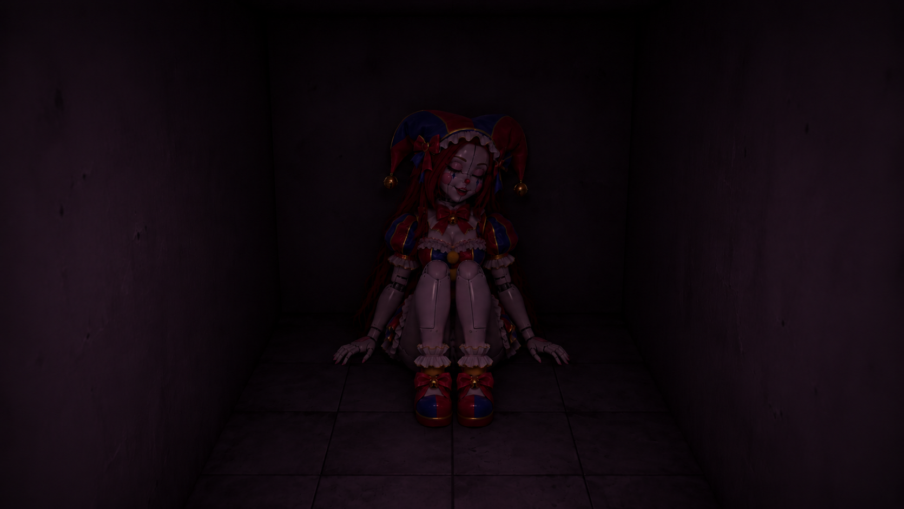

ESCRITÓRIO DE SEGURANÇA / CONTROLE


MODO DE REFERÊNCIA
CAM 04 · CENÁRIO CINEMATOGRÁFICO AINDA NÃO INCLUÍDO
RECCAM 01
Lojinha
12 AM
NOITE 01✿
6:00 AM
O turno terminou.
Primeira noite concluída.
SINAL PERDIDO